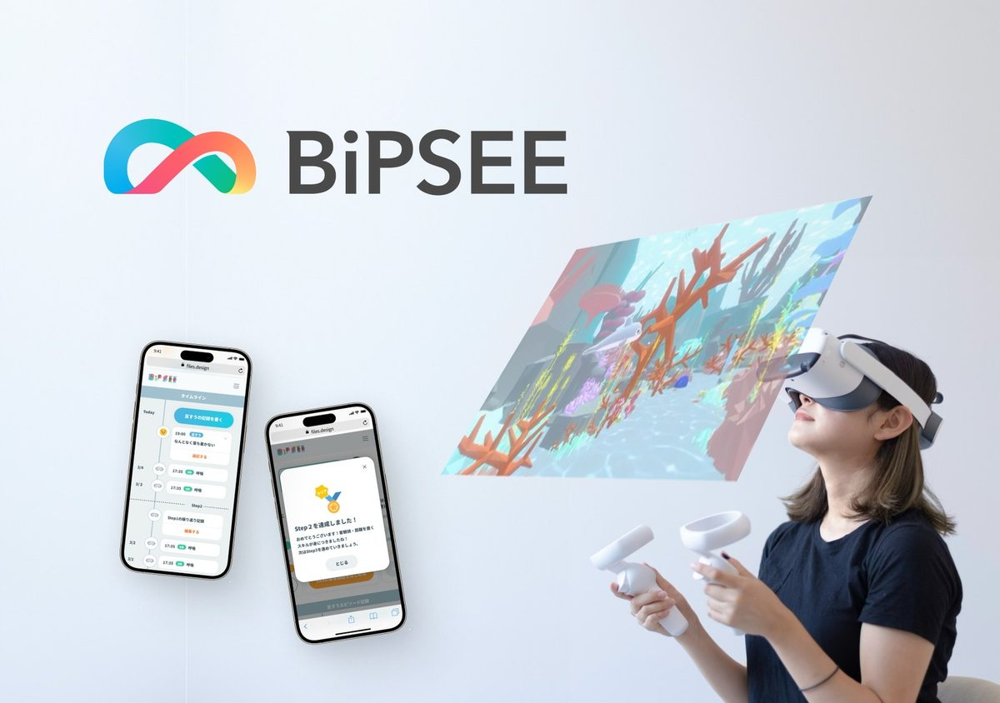

うつ病向けVRデジタル療法
反すう（考えの堂々巡り）に焦点を当てた認知行動療法を、VRゴーグルとスマートフォンアプリで自宅で続けられるよう設計した、うつ病向けのVRデジタル療法（プログラム医療機器として開発中）。体験設計・ソフトウェア開発から品質保証・臨床開発までを統括しています。2025年には、大阪・関西万博での特許庁の企画展示「明日を変える知財のチカラ」に出展しました。同じ技術と体験設計を、国立がん研究センター東病院との臨床研究、早稲田大学との共同研究、高知県補助事業・室戸市での高齢者向け初期検証、パーソルネクステージへの就労支援「BiPSEE Cog Flex」の導入（2023年）にも応用しています。
医療機器（SaMD）XR／VR
画像：株式会社BiPSEE